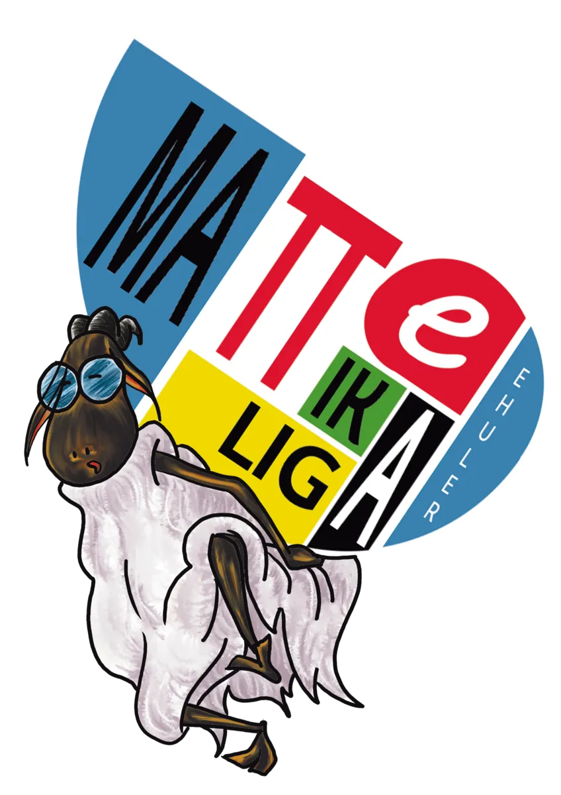

Aunque no haya partido, todas las semanas hay liga: el taller de los miércoles es el entrenamiento que todo matemático necesita para competir a pleno rendimiento en los partidos de los sábados, donde se pondrá a prueba todo lo aprendido

El taller semanal se celebra los miércoles y se centra en el tema sobre el que versarán los problemas de la siguiente jornada de competición. Es el espacio para practicar, resolver dudas y profundizar en los contenidos.
El taller está pensado para llegar preparado a la competición del sábado: los equipos trabajan juntos antes de medirse al resto de la liga.
Junto a los talleres se ofrecen materiales de apoyo para preparar las jornadas. Todos los participantes pueden usarlos, formen o no un equipo completo.
Los talleres se emiten en directo y quedan grabados, de modo que los participantes que no puedan asistir podrán verlos en cualquier momento.
Cada taller tiene sus apuntes disponibles para descargar. Los apuntes aparecerán aquí cuando esten disponibles:
Reúne a tu equipo y participa en la primera edición de la Liga antes del 2 de noviembre de 2026.